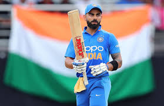

VIRAT KOHLI
breaking news
2008–2009: Debut and maiden stint
In August 2008, Kohli was selected for inclusion in the ODl squad for the tour of Sri Lanka and the Champions Trophy in Pakistan. Prior to the Sri Lankan tour, Kohli had limited experience, with only eight List A matches under his belt.[46] So, his selection was considered a "surprise call-up". [47] During the Sri Lankan tour, as both first-choice openers Sachin Tendulkar and Virender Sehwag, were unable to play due to injury, Kohli was required to fill the role of makeshift opener throughout the series.[48] On 18 August 2008, Kohli made his international debut at the age of 19 in the first ODI of the tour, where he was dismissed for 12 runs, caught dead in front by an incutter from Nuwan Kulasekara.[49] However, in the fourth match of the series, Kohli achieved his inaugural half century in the ODl format, with a total of fifty-four runs scored.[50] Following the postponement of the Champions Trophy to 2009, Kohli was picked as a replacement for the injured Shikhar Dhawan in the India A squad for the unofficial Tests against Australia A in September 2008.[51] Despite limited opportunities, he managed to make an impact in the single innings that he participated in, scoring 49 runs.[52] In October 2008, Kohli participated in a four-day tour match against Australia as part of the Indian Board President's XI team. The match featured a formidable Australian bowling line-up that consisted of Brett Lee, Stuart Clark, Mitchell Johnson, Peter Siddle and Jason Krejza. Despite this, Kohli displayed his batting prowess by scoring 105 runs in the first innings and an unbeaten 16 runs in the second innings, demonstrating his ability to perform against high-level international competition.In November 2008, Kohli was selected for inclusion in the squad for the home ODI series against England, due to the presence of established and experienced players such as Tendulkar and Sehwag, he was not given an opportunity to play in any of the matches.[54] In December 2008, Kohli was awarded a Grade D contract by the Board of Control for Cricket in India (BCCI) as part of the annual contract list for the Indian national team which entitled him to receive ₹1.5 million (equivalent to ₹4.2 million or US$52,000 in 2023), A certain level of remuneration for representing the national team in various matches and events.[55] Despite being awarded a contract, in January, Kohli was dropped for the five-match ODl series against Sri Lanka in Sri Lanka.[56] In July–August 2009, Kohli was selected in the four-team Emerging Players Tournament, held in Australia. He was selected to open the innings for the Indian Emerging Players team in the tournament, and he went on to have a standout performance. Kohli finished as the tournament's leading run-scorer, with a total of 398 runs from seven matches, at an average of 66.33. He was particularly impressive in the final match, where he scored 104 runs off 102 balls against the South Africa Emerging Players team in Brisbane. His strong performance helped lead his team to a 17-run victory and the tournament title.[57][58] At the conclusion of the tournament, Kris Srikkanth, the Chairman of the Indian national selection committee, expressed his admiration for Kohli's performance during the tournament. Srikkanth stated, "I must say, opener Virat Kohli was outstanding. Some of the shots he played spoke about his ability."[59] Kohli himself has stated that this tournament was a "turning point" in his career. [60] In August 2009, Kohli returned to the national team after recovering from a minor shoulder injury, replacing the injured Gautam Gambhir in the Indian squad for the tri-series in Sri Lanka.[61] He was also utilized as a middle order batsman in the 2009 ICC Champions Trophy due to an injury sustained by Yuvraj Singh.[62] In December of that same year, he was included in the team for home ODI series against Sri Lanka and scored 27[63] and 54 in the first two ODIs before making way for Yuvraj, who regained fitness for the third ODI. However, due to the reoccurrence of a finger injury, Yuvraj was ruled out indefinitely,[64] which led to Kohli's return to the team in the fourth ODI at Kolkata. In that match, Kohli scored his maiden ODI century–107 off 114 balls–while sharing a 224-run partnership for the third wicket with Gambhir. As a result of this performance, India won by seven wickets and sealed the series 3–
2019–2020: Record breaking captaincy and batting woes
In April 2019, he was named the captain of India's squad for the 2019 Cricket World Cup.[255] On 16 June 2019, in India's match against Pakistan, Kohli became the fastest batsman in terms of innings to score 11,000 runs in ODI cricket. He reached the landmark in his 222nd innings.[256] Eleven days later in the match against the West Indies, Kohli became the fastest cricketer in terms of innings to score 20,000 runs in international cricket, doing so in his 417th innings.[257] Kohli scored five consecutive fifty plus scores in the tournament . Nonetheless, India lost the semi-final against New Zealand in which Kohli was out for just a run.[258] After the World Cup, India toured West Indies for 3 T20Is and 3 ODIs followed by two test matches .[259] Kohli was instrumental in ODI series win as he struck back to back hundreds in second and third ODI. He was awarded player of the series for his match performances.[260] In the following test series which India won 2–0, Kohli became most successful test captain for India, going past MS Dhoni who had 27 wins.[261]
In October 2019, Kohli captained India for the 50th time in Test cricket in the second Test against South Africa. In the first innings of the match, Kohli scored an unbeaten 254 runs which is his personnel best at same time passing 7,000 runs in Tests in the process subsequently became the first batsman for India to score seven double centuries in Test cricket.[262] In November 2019, during the day/night Test match against Bangladesh, Kohli became the fastest captain to score 5,000 runs in Test cricket, doing so in his 86th innings. In the same match, he also scored his 70th century in international cricket.[263]

2023–present
In the early part of the year, Kohli began his campaign with a century against the touring Sri Lankan side in ODI.[305] In the third match of the series, Kohli amassed an unbeaten 166 runs from 110 balls. This century, his 21st in India, marked a milestone as he surpassed all other players for the most ODI centuries scored in the country. Additionally, his performance in this match elevated him to become the fifth highest run-scorer in ODI cricket, going ahead of Mahela Jayawardene.[306] Following Kohli's performance, India went on to win the third ODI match by a record margin of 317 runs.[307] In February–March 2023, Kohli played in the Border-Gavaskar series of 2023. He faced a string of low scores in the initial three tests, before playing an innings of discipline and technical correctness, in the final test at Ahmedabad. He amassed a total of 186 runs in the match with his century being his first in the format in three years.[308] On 20 July 2023, Kohli became the 10th player to play in 500 international matches and simultaneously became the first player to register a fifty-plus score in a 500th international match whilst scoring his 29th Test century. Among Indians, only Sachin Tendulkar (664), M. S. Dhoni (538), and Rahul Dravid (509) have appeared in more international matches than Kohli. Kohli, incidentally, has aggregated the most runs (25582) among these players after their first 500 matches.[309] In August 2023, he was selected in India's squad for 2023 Asia Cup. In the opening match against Pakistan, Kohli could only score 4 runs before being bowled by Shaheen Afridi. The match, however, was called off due to rain. He did not get to bat in the second match against Nepal as India won the match without losing any wicket. However, in the next match against Pakistan, Kohli scored a century and stitched an unbeaten 233 run partnership with KL Rahul, making it the highest partnership in the history of the tournament. During the match, he also achieved the milestone of the fastest batsman to score 13,000 ODI runs. He reached the landmark in his 267th innings going past Sachin Tendulkar who took 321 innings to achieve this feat.[310]